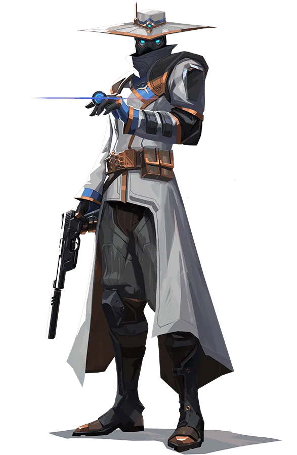

Cypher

Compétences
- Trapwire (C): Place un fil de détection qui se connecte aux murs, alertant Cypher de la présence d'ennemis qui traversent la ligne.
- Cyber Cage (Q): Lance un dispositif de détection qui crée une zone de champignon qui bloque la vision des ennemis.
- Spycam (E): Place une caméra de surveillance contrôlable qui permet à Cypher de surveiller une zone spécifique.
- Neural Theft (X): Récupère l'emplacement des ennemis morts à proximité et les affiche à Cypher et à son équipe.
Cartes Recommandées
| Carte |
Raison |
Nombre de fois joué |
| Bind |
Les capacités de Cypher sont idéales pour contrôler les passages étroits sur Bind. |
20000 |
| Haven |
Ses dispositifs de détection sont essentiels pour garder un œil sur les trois sites de bombe de Haven. |
18000 |
Conseils d'Utilisation
Utilisez les fils de détection et les caméras de Cypher pour contrôler les zones clés et obtenir des informations sur les mouvements ennemis. Placez ses pièges de manière stratégique pour ralentir et perturber les attaques ennemies.